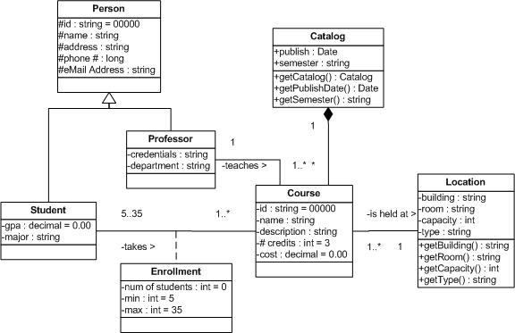
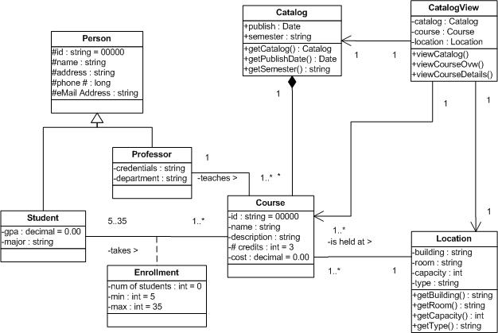
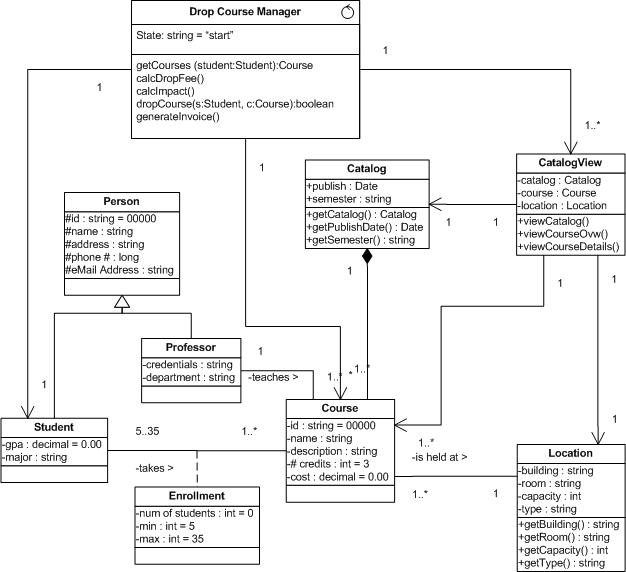
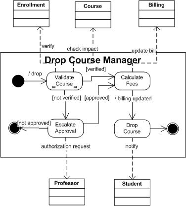

OUM |
Task Overview |
||
Method Navigation |
Current Page Navigation |
||
|
|
||||||||
The purpose of this task is to create design level details for the data that is required for a component. The Data Analysis (AN.050) for each use-case package is reviewed, along with the Conceptual and Module Views of the Architecture Description.
In a commercial off-the-shelf (COTS) application implementation, this task is performed only for those requirements that can only be satisfied through custom-built components, which extend the functionality of the COTS system and/or integrate the COTS system with other COTS or legacy systems.
The standard and recommended approach and notation for completing this task is to use a UML class diagram. If your project is using a UML approach, the data design is developed by updating the class diagram for the classes identified in Analysis and by adding additional classes when necessary. Various aspects to be considered for each design class are: attributes, attribute types, default values, attribute accessibility, attribute visibility, associations, interfaces, states pertaining to the class, dependencies and implementation of non-functional requirements. If no classes are identified or if your project does not require class diagrams, you do not need to execute this task.
This task may also be accomplished using a non-UML approach that employs other notational or textual techniques including entity-relationship diagrams (ERD’s) or data tables.
This task is executed in parallel with the following tasks:
C.ACT.DC Design - Construction
Component Data Design
The result of designing the data is captured in a design-level class diagram (or in another, non-UML notation like an ERD) which shows the design details for each of the attributes and related data access.
Typically, this work product would exist as part of the overall Design Model in a repository. In some cases, when it is necessary for sign-off or hand-off to a remote implementation team, the work product may be organized, along with other design work products, into a Design Specification (DS.140). Please see the Develop Design Specification (DS.140) task overview for further information and guidance.
You should follow these steps:
No. |
Task Step | Component | Component Description |
|---|---|---|---|
1 |
Design entity class attributes. | Design Class Diagram | Add attribute types, default values, attribute visibility, attribute accessibility, to entity classes. |
2 |
Design boundary class attributes. | Design Class Diagram | For each external interface (i.e., boundary classes), add the attributes and accessor operations to provide accessibility to the data being viewed. |
3 |
Design controller class attributes. | Design Class Diagram | For controller classes, add the attributes to help object(s) maintain stateful transitions. |
4 |
Refine states for classes. | Design Class Diagram | For classes that have significant dynamic behavior, state diagrams should be developed to show how events, actions, states, and transitions occur. |
The language used to describe the classes is the same as the programming language to be used to implement the classes. Attributes and their visibility, parameters, operations and their visibility, interfaces etc. are very specific to the implementation environment. The way in which the class is to be implemented (for example, file name and extension) can also be defined in terms of the programming environment.
In order to define attributes of a design class, the attributes of the analysis class are re-used as a starting point. Sometimes, several attributes or even a separate class is required to support a single attribute of the corresponding analysis class. Relationships between classes are described in the manner in which they will be implemented (for example, adding any reference attributes in classes). Refine multiplicities, role names, association classes, n-ary associations according to the support provided by the programming language to be used.
Pseudo code or descriptive language is used to describe the implementation of the operations (algorithm for the methods) of the classes. The responsibility of the analysis class is used to identify the operations required to be supported by the class. Finally, supplemental requirements that apply to the classes are identified and designed.
Design your persistence classes: the entity classes. The database technology and persistent mechanisms play an important role in shaping the design of entity classes. This task step is closely related to the task, Develop Database Design (DS.150). An Analysis Entity Class may be decomposed in several Design Entity Classes. Depending on the persistence mechanism used to persist objects, different approaches are used to transform Analysis Entity Classes into Design Entity Classes. For instance, Oracle BC4J, Oracle TopLink and EJB each have a different way to support Design Entity Classes. Thus, the Design Entity Classes is very dependent on the persistence mechanism used to support object persistence.
When the Analysis Entity classes are designed, each attribute is assigned a type, a visibility indicator (+ = public, # = protected, - = public, and ~ = default), a default value (optional), primary/secondary key, and accessor operations for each public attribute. Here is an example of the type of detail that would be added to the analysis Entity classes that would transform it into a Design Entity Class diagram:

The Analysis Boundary Classes pass via a design process and generate several Boundary Design Classes. Any existing user interface prototypes are to be used as inputs to this step. The user interface boundary classes are specified in terms of the software development tool in which the user interface is to be developed. Depending on the architecture chosen for the project, the approach for designing boundary classes may differ. For instance, Java application and Java applets may require more elaborate designs. UIX-based interface may require less boundary class diagrams since most of the boundary classes are generated automatically. JSP and Servlets may also require a lower amount of classes, etc.
An example of a boundary class is “CatalogView” in the diagram below:

Controls classes are responsible to coordinating, sequencing, transactions, and control of other objects. Depending on the mechanism chosen to support these classes, the approach that will be used to transform Analysis Control Classes into Design Control Classes might differ. The Design Control Classes should contain the operations the control classes will provide to their customers. Design-by-contract should be used to specify the behavior of the methods that implement such operations. Depending on the technology chosen to support the control classes (for example, BC4J, EJB’s, etc.), the design approach for the control classes may also be different.
An example of a controller class is the “Drop Course Manager”. Notice how the operation signature (including the arguments) is defined at this stage of design.

Refine already existing state diagrams of complex classes and create new ones based on the needs highlighted during the Design process. The State Transition Diagrams are now updated to reflect modifications (if any) required based on the use case analysis done earlier during the Design process. The state diagrams provide a rich source of information for defining design-by-contract constraints on the control classes.
An example of a state diagram for the controller class “Drop Course Manager” is below:

This task has supplemental guidance that should be considered if you are executing a service based on the BPM Project Engineering view. Use the following to access the task-specific supplemental guidance. To access all BPM Project Engineering supplemental information, use the BPM Project Engineering Supplemental Guide.
This task has supplemental guidance that should be considered if you are doing a Siebel CRM implementation. Use the following to access the task-specific supplemental guidance. To access all Siebel CRM supplemental information, use the OUM Siebel CRM Supplemental Guide.
This task has supplemental guidance that should be considered if you are doing a SOA Application Integration Architecture (AIA) implementation. Use the following to access the task-specific supplemental guidance. To access all SOA AIA supplemental information, use the OUM SOA AIA Supplemental Guide.
This task has supplemental guidance that should be considered if you are doing a SOA Governance Implementation. Use the following to access the task-specific supplemental guidance. To access all SOA Governance Implementation supplemental information, use the OUM SOA Governance Implementation Supplemental Guide.
This task involves the following method roles:
Role |
Responsibility |
% |
|---|---|---|
System Architect |
Participate in definition and review of the Component Data Design to gain an understanding of the application and its architecture. | 20 |
Developer |
Review the Component Data Design in order to assure that it is compatible with the architecture. This person is also responsible for designing the more complex packages and classes. | 20 |
Designer |
Define and maintain the responsibilities, attributes, relationships and special requirements of the classes making sure that each class fulfills its requirements. Responsible for the analysis of packages within which the classes are maintained. There may be several designers depending on the size of the project, each of which may be responsible for certain classes and packages assigned to them. You may want to use an object designer to fill this role or in addition to this role. | 60 |
* Participation level not estimated.
You need the following for this task:
Prerequisite |
Usage |
|---|---|
Reviewed Analysis Model (AN.110) |
The Analysis Model, including the various class diagrams (entity, boundary and control class diagrams), is used as input for designing the classes. Also, the State Transition Diagrams will be updated, if necessary. The Analysis Model is comprised of all of the Analysis work products. The analysis classes and packages that are part of the Analysis Model are used as a basis to identify components, subsystems, and layers. The Analysis Model represents a collection of all Analysis work products, as available, resulting from the following tasks:
|
Architecture Description |
The Conceptual View and the Module View of the Architecture Description must be taken into account to ensure that the design fits within the given framework. |
Design and Build Standards (DS.050) |
|
Validated Functional Prototype (RA.085) Validated User Interface Standards Prototype (RA.095) |
If there are any existing Functional Prototypes or User Interface Standards Prototypes, these are used as an input to design Boundary Classes. |
Prerequisite |
Usage |
|---|---|
Reviewed Analysis Model (AN.110) |
The Analysis Model, including the various class diagrams (entity, boundary and control class diagrams), is used as input for designing the classes. Also, the State Transition Diagrams will be updated, if necessary. The Analysis Model is comprised of all of the Analysis work products. The analysis classes and packages that are part of the Analysis Model are used as a basis to identify components, subsystems, and layers. The Analysis Model represents a collection of all Analysis work products, as available, resulting from the following tasks:
|
Architecture Description |
Updates to the Architecture Description may impact the design of the data, and therefore, must be taken into account. |
The following templates and tools are available to assist with this task:
There are currently no templates available to assist with this task.
Tool |
Comments |
|---|---|
| JDeveloper |
Example |
Comments |
|---|---|
The primary audience for these Design-level classes is the developer. If done properly the translation from these models into code should be relatively straight forward. If one is using a code-generating modeling tool, many of the features that are placed on the Design Model will be directly translated into code.
Use the following criteria to check the quality of this work product:

Copyright © 2006, 2016, Oracle and/or its affiliates. All rights reserved.